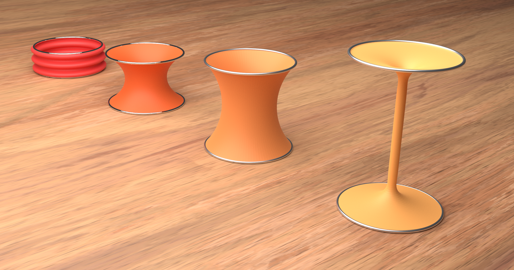
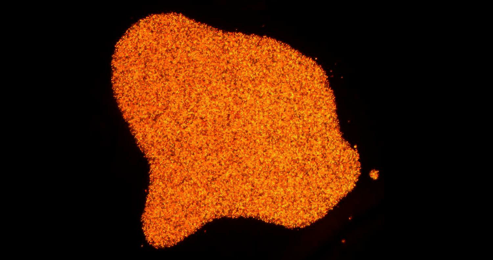
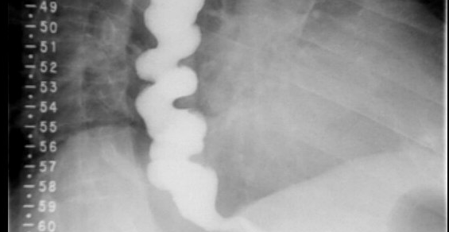

Geometry and Mechanics of Soft Matter
The mechanics of thin flexible structures, such as the
membranes that envelop our cells, is intimately tied to
their geometry. Elucidating this connection may teach
us how to design advanced materials with biomimetic properties.
View my 2021 APS DFD Meeting video

Active Fluid Dynamics
In biology it is rare for objects to be sitting still.
The physics of active systems composed of many interacting
agents far from equilibrium, such as flocks of birds or schools
of fish, exhibits a cornucopia of rich and interesting
dynamical phenomena.

Metrology for Biological Systems
What does physics tell us about complex biological phenomena?
Can we use our theoretical understanding of mechanics to obtain higher quality data, predict the onset of disease, and save lives?
View our Taking Measure biog entry
